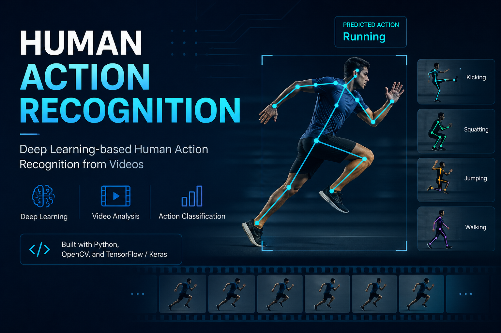

All Projects
Selected Work

ResearchLineage — LLM Research Path Tracker
Collaborative LLM-powered research lineage tracker that maps how ideas evolve across academic literature. I contributed the citation-graph data acquisition pipeline, fine-tuned and evaluated the lineage-prediction model, and built the MLOps monitoring dashboards (data drift and prediction-quality drift) — working alongside teammates who built the frontend, CI/CD, and model registry infrastructure.
Data acquisition — async citation-graph crawler with adaptive filtering and multi-layer caching, cutting API calls 98% and runtime 46%
Model training & evaluation — fine-tuned an LLM for lineage prediction with a bias-aware train/test split eliminating data leakage
MLOps monitoring — Kibana/Elasticsearch dashboards tracking data and prediction-quality drift over time

VIBE — Visual & Image-Based Evaluation
Multimodal AI system for fine-grained image-text alignment scoring. Uses a frozen CLIP ViT-B/32 backbone for cross-modal feature extraction, paired with Energy-Based Models trained via InfoNCE contrastive loss on MS-COCO. Langevin MCMC dynamics enable nuanced alignment scoring far beyond standard cosine similarity — capturing subtle semantic relationships between vision and language modalities.
CLIP ViT-B/32 frozen backbone — joint vision-language embedding space
InfoNCE contrastive loss trained on MS-COCO image-caption pairs
Langevin MCMC dynamics for energy-based alignment scoring
Multimodal semantic scoring beyond cosine similarity baselines

TheraBot — Mental Health Support Chatbot
Real-time mental health support chatbot built on a three-model fine-tuning pipeline. BERTweet with attention pooling handles emotion classification, a fine-tuned RoBERTa detects sarcasm for context-aware responses, and DistilGPT2 generates empathetic replies conditioned on detected emotion, sarcasm signals, and conversation history. Deployed as a Flask + Streamlit application.
72% macro F1 on GoEmotions — BERTweet fine-tuned with attention pooling
74% accuracy sarcasm detection — RoBERTa fine-tuned on SARC dataset
DistilGPT2 response generation conditioned on emotion + sarcasm + context
End-to-end fine-tuning pipeline across three transformer architectures

Human Action Recognition — CV Pipeline
End-to-end computer vision pipeline for real-time human action recognition from video streams. Built on a deep CNN architecture with temporal feature extraction using OpenCV preprocessing. Trained on benchmark action recognition datasets with a focus on generalization across lighting conditions and camera angles. Optimized for inference speed suitable for real-time deployment.
CNN-based temporal feature extraction for action classification
OpenCV preprocessing pipeline for real-time video frame handling
Optimized for real-time inference across diverse environmental conditions